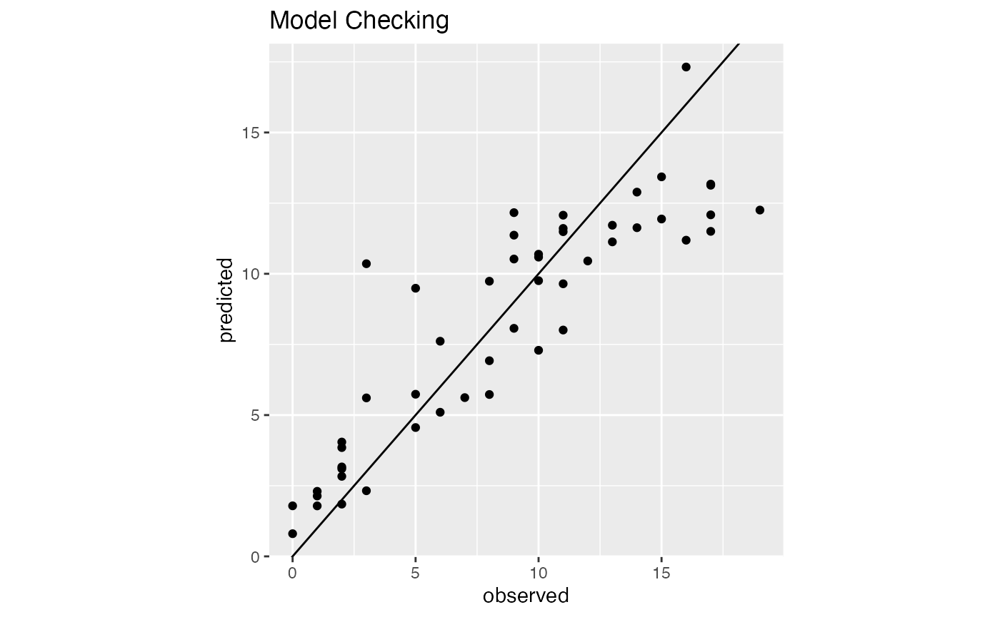
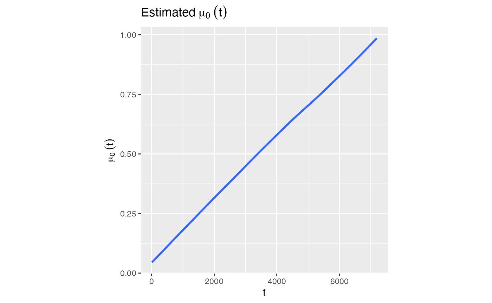
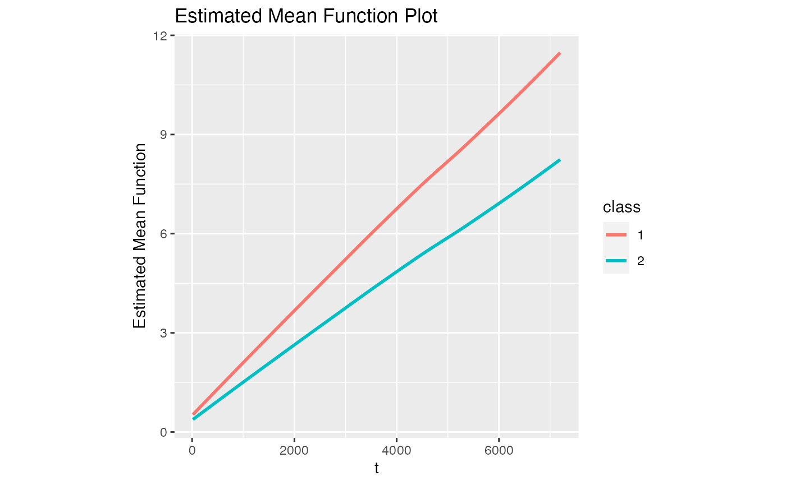

SLCARE models recurrent events data based on a
semi-parametric multiplicative model.
Data and Model assumption
Let \(T_{i} ^{(j)}\) denote time to the \(j^{th}\) recurrent event, \(\tilde{Z} _{i}\) denote a \(p \times 1\) vector of time-independent covariates, \(C_{i}\) censoring time.
Counting process for recurrent events: \[ N_{i} ^{*} (t) = \sum _{j = 1} ^{\infty} I(T_{i} ^{(j)} \leq t), i = 1,\cdots ,n \] Assume \(N_{i} ^{*} (t)\) is a non-stationary Poisson process with intensity function: \[ \lambda _{i} (t) = \sum _{k = 1} ^{K} I (\xi _{i} = k) \times \lambda _{0} (t) \times W_{i} \times \eta _{0,k} \times exp(\tilde{Z} _{i} ^{T} \tilde{\beta} _{0,k})\tag{1} \] Where:
\(K\) : a pre-determined number of latent class
\(\xi _{i}\): un-observable latent class membership
\(\lambda _{0} (t)\): an unspecified, continuous, non-negative baseline intensity function shared among different latent class
\(W_{i}\): a positive subject-specific latent variable independent of \((\xi, \tilde{Z}, C)\), \(W_{i}\) offers the flexibility to accommodate individual difference with a larger or smaller value indicating more or less frequent occurence of recurrent events.
Unknown class-specific parameters:
\(\eta _{0,k}\) Captures the class-k scale shift in the baseline intensity function
\(\tilde{\beta} _{0,k}\) represents the class-k corvariate effects on the intensity function
To ensure the identifiability of \(\lambda _{0} (t)\) And \(\eta _{0,k}\) in (1), assume \(E(W_{i} | \tilde{Z}_{i} , \xi _{i} = k) = 1\) for \(k = 1, \cdots, K\) and impose the constraint: \[ \int _{0} ^{v^{*}} \lambda _{0} (t) dt = 1 \tag{2} \] where \(v^{*}\) is a predetermined constant
- In practice, it may be chosen to be slightly smaller than the upper bound of \(C_{i}\) ’s support
- Or it would only imply a scale shift to \(\lambda _0 (t)\) by a constant with \(\eta _{0,k}\) and \(\tilde{\beta} _{0,k}\) remaining the same
To address the difficulty with the unobservable latent class membership, assume a multinomial logistic regression model for \(\xi _{i}\) : \[ P(\xi _{i} = k | \tilde{Z} _{i}) = p_{k} (\alpha _{0} , \tilde{Z} _{i}) = \frac{exp(\tilde{Z} _{i} ^{T} \alpha _{0,k})}{\sum_{k = 1}^{K}exp(\tilde{Z} _{i} ^{T} \alpha _{0,k}) } , k = 1, \cdots, K \tag{3} \] Where: \(\alpha _0 = (\alpha _{0,1} ^{K}, \dots, \alpha _{0,K}^{K})^{T}\)
Examples
We will illustrate the usage of SLCARE with
SLCARE_simdat from the SLCARE package.
library(SLCARE)
data("SLCARE_simdat", package = "SLCARE")
head(SLCARE_simdat)
#> ID time event x1 x2
#> 1 UOM054 65 1 0 0.5555556
#> 2 UOM054 940 1 0 0.5555556
#> 3 UOM054 2420 1 0 0.5555556
#> 4 UOM054 2475 1 0 0.5555556
#> 5 UOM054 2650 1 0 0.5555556
#> 6 UOM054 3830 1 0 0.5555556Fit the model with K = 2 with frailty \(W = 1\).
Note that by default, the initial values in the iteration based
estimation procedure are derived with K- means and a multiplicative
intensity model studies by Wang et al. (2001) using the reReg()
function. See SLCARE::get_initial() for details.
model1 <- SLCARE(dat = SLCARE_simdat, K=2)SLCARE will return to a list containing:
names(model1)
#> [1] "alpha" "beta"
#> [3] "convergeloss" "PosteriorPrediction"
#> [5] "EstimatedTau" "ModelChecking"
#> [7] "est_mu0" "Estimated_mu0t"
#> [9] "Estimated_Mean_Function" "RelativeEntropy"
#> [11] "InitialAlpha" "InitialBeta"We can check the point estimates for \(\alpha\) and \(\beta\)
model1$alpha
#> x1 x2
#> class1 0.0000000 0.000000
#> class2 0.2204357 -3.736727
model1$beta
#> (Intercept) x1 x2
#> class1 2.496767 -0.110277 0.1679575
#> class2 3.175178 -0.141808 -5.5362092We can check the posterior prediction for observed events for subjects of interest
model1$PosteriorPrediction
#> ID PosteriorPrediction
#> 1 UOM054 10.5227224
#> 2 EM015 11.5014781
#> 3 G078 11.4903563
#> 4 UOM048 11.9388759
#> 5 G050 11.1886724
#> 6 G058 3.8500141
#> 7 EM037 5.7373952
#> 8 G052 1.8489939
#> 9 UOM043 2.3018298
#> 10 G064 12.2549101
#> 11 EM036 1.7865768
#> 12 UOM003 7.2927102
#> 13 EM001 9.6461813
#> 14 UOM020 5.6180338
#> 15 G027 6.9236494
#> 16 UOM023 12.1637705
#> 17 UOM051 9.7369634
#> 18 G036 12.0859251
#> 19 G051 13.4306809
#> 20 UOM055 12.0733739
#> 21 G070 5.6079467
#> 22 UOM009 4.5591882
#> 23 G047 10.3564909
#> 24 G007 11.3667516
#> 25 G009 10.5893497
#> 26 G004 2.3224480
#> 27 UOM040 17.3172396
#> 28 EM013 3.1650867
#> 29 G066 1.7884215
#> 30 G021 11.1295757
#> 31 G061 8.0095335
#> 32 UOM031 0.8026416
#> 33 EM044 9.7559038
#> 34 G015 5.7280014
#> 35 EM018 12.8902131
#> 36 UOM050 13.1332526
#> 37 G005 8.0697634
#> 38 G003 10.4539334
#> 39 G018 5.0996630
#> 40 G057 11.7181383
#> 41 G072 11.6051441
#> 42 UOM005 13.1737497
#> 43 G019 4.0456816
#> 44 UOM025 9.4886388
#> 45 G065 2.1372540
#> 46 EM014 10.6922976
#> 47 G079 2.8322107
#> 48 UOM007 3.1004627
#> 49 G048 7.6133885
#> 50 G080 11.6309883We can check the posterior probability of latent class membership
model1$EstimatedTau
#> ID class1 class2
#> 1 UOM054 0.999999641 3.588689e-07
#> 2 EM015 0.999999270 7.296420e-07
#> 3 G078 0.998646435 1.353565e-03
#> 4 UOM048 1.000000000 3.410495e-13
#> 5 G050 0.998840723 1.159277e-03
#> 6 G058 0.437239412 5.627606e-01
#> 7 EM037 0.559913306 4.400867e-01
#> 8 G052 0.009863978 9.901360e-01
#> 9 UOM043 0.325872654 6.741273e-01
#> 10 G064 1.000000000 9.013150e-25
#> 11 EM036 0.001336693 9.986633e-01
#> 12 UOM003 0.188217597 8.117824e-01
#> 13 EM001 0.948642553 5.135745e-02
#> 14 UOM020 1.000000000 3.327574e-10
#> 15 G027 0.999976786 2.321358e-05
#> 16 UOM023 0.999999995 5.446992e-09
#> 17 UOM051 0.776284012 2.237160e-01
#> 18 G036 0.714972850 2.850272e-01
#> 19 G051 1.000000000 4.054462e-14
#> 20 UOM055 0.910532662 8.946734e-02
#> 21 G070 0.681826745 3.181733e-01
#> 22 UOM009 0.547115965 4.528840e-01
#> 23 G047 0.359803746 6.401963e-01
#> 24 G007 0.983611339 1.638866e-02
#> 25 G009 0.554658656 4.453413e-01
#> 26 G004 0.055220951 9.447790e-01
#> 27 UOM040 0.319408186 6.805918e-01
#> 28 EM013 0.546855255 4.531447e-01
#> 29 G066 0.012265950 9.877341e-01
#> 30 G021 0.969492976 3.050702e-02
#> 31 G061 0.290533287 7.094667e-01
#> 32 UOM031 0.618818075 3.811819e-01
#> 33 EM044 0.999824606 1.753943e-04
#> 34 G015 0.999977573 2.242684e-05
#> 35 EM018 0.999976933 2.306671e-05
#> 36 UOM050 1.000000000 3.290086e-11
#> 37 G005 0.433093210 5.669068e-01
#> 38 G003 0.702729729 2.972703e-01
#> 39 G018 0.545514459 4.544855e-01
#> 40 G057 0.999999892 1.077511e-07
#> 41 G072 0.612486202 3.875138e-01
#> 42 UOM005 1.000000000 5.818215e-13
#> 43 G019 0.447460375 5.525396e-01
#> 44 UOM025 0.999751903 2.480969e-04
#> 45 G065 0.309831911 6.901681e-01
#> 46 EM014 0.997311331 2.688669e-03
#> 47 G079 0.748248625 2.517514e-01
#> 48 UOM007 0.534013300 4.659867e-01
#> 49 G048 0.221051811 7.789482e-01
#> 50 G080 0.999999626 3.742849e-07We can check the plot for model checking
model1$ModelChecking
We can check the plot for \(\hat{\mu} _{0}(t)\)
model1$Estimated_mu0t
#> `geom_smooth()` using method = 'loess' and formula = 'y ~ x'
We can check the \(\hat{\mu} _{0} (t)\) at specific time points. For example, let \(t = 100, 1000, 5000\)
model1$est_mu0(c(100, 1000, 5000))
#> [1] 0.06086907 0.17089670 0.70936436We can check the plot of estimated mean function
model1$Estimated_Mean_Function
#> `geom_smooth()` using method = 'loess' and formula = 'y ~ x'
We can check the relative entropy for the fitted model
model1$RelativeEntropy
#> [1] 0.5468913We can check the initial values for iteration based estimation procedure
model1$InitialAlpha
#> x1 x2
#> class1 0.0000000 0.000000
#> class2 -0.4984874 -2.447667
model1$InitialBeta
#> intercept x1 x2
#> class1 2.563970 -0.2441563 0.06202144
#> class2 2.125367 0.0107472 -1.09947581Fit the model with K = 2 with frailty \(W = 1\) and apply self-defined initial values in estimation procedure.
Fit the model with K = 2 with frailty \(W \sim gamma(3,3)\) and apply self-defined initial values in estimation procedure.
model3 <- SLCARE(alpha, beta, dat = SLCARE_simdat, gamma = 3)We may also calculate bootstrap standard errors by using
boot argument
# model4 <- SLCARE(alpha, beta, dat = SLCARE_simdat, boot = 100)We can check bootstrap standard errors
# model4$alpha_bootse
# model4$beta_bootse